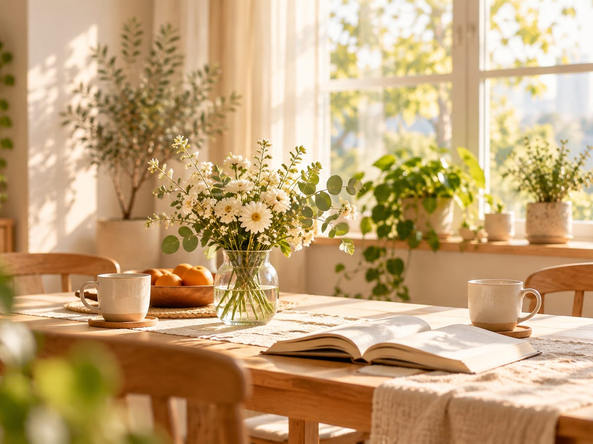
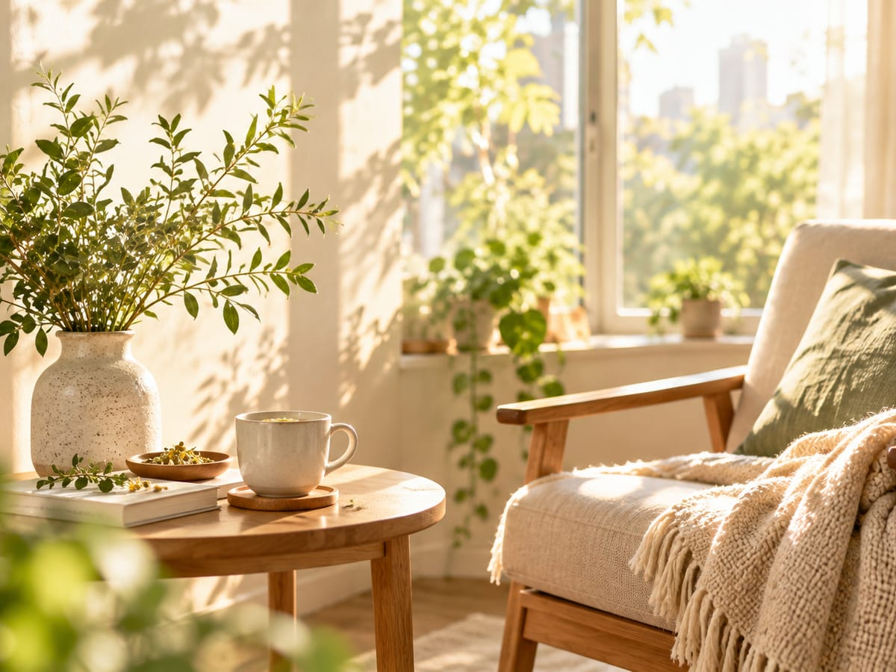

跳到主要內容
未核准測試內容｜第二批 23 筆地方入口與 12 篇導讀、第三批 9 筆自主學習／生活資訊入口與 5 篇原創導讀、第四及第五批 13 篇導讀、第六批 6 篇城市福利導讀、最新擴充 8 篇生活／學習文章與 11 筆不同網址的長期官方查詢入口，均供公開測試，尚未核准正式發布；部分外站報名另有條件。
由己
SELF-AUTHORED
女性生活、權益與在地資源指南
讀利專欄
THE CONSIDERED PAGE
向望
TOWARD OPEN SKIES
搜尋
選單
切換畫面
首頁
生活與家庭
職涯與創業
身心健康
法律與權益
城市與福利
學習與活動
搜尋全站
女性生活、權益與在地資源指南
生活有很多選擇，
也有很多值得理解的事。
從生活知識到官方資源，陪你找到需要的資訊，保留自己的選擇。
搜尋全站
×
搜尋
找不到相符的內容。試試看換個詞，或從生活主題開始瀏覽。
Six Topics
六個生活主題

生活與家庭
育兒、托育與家庭照顧
職涯與創業
求職、訓練與創業

身心健康
身體照顧與心理支持
法律與權益
職場權益與法律扶助
城市與福利
依縣市查詢在地服務
學習與活動
課程、講座與進修
快捷入口
有急事
（撥打 110）
讀利專欄
THE CONSIDERED PAGE
向望
TOWARD OPEN SKIES
關於由己
ABOUT
近期活動